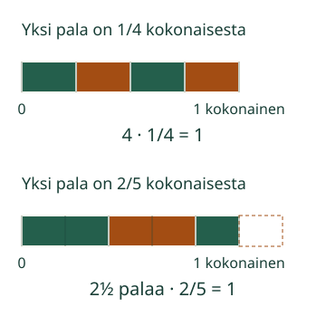

<link rel="stylesheet" href="lesson.css">

<section data-teaching-step="1" data-lesson-role="teaching-step">
<section class="lesson-intro"><h2>Mikä kerroin tekee tuloksi yhden?</h2><p>Loikka täyttää yhden kokonaisen yhtä suurilla mittapaloilla. Palojen määrä ja yhden palan koko liittyvät toisiinsa.</p><p><strong>Etsin luvulle kertoimen, jolla tulo on yksi.</strong></p></section>
</section>


<section><section data-teaching-step="2-1" data-lesson-role="teaching-step"><h2>Kokonainen ja yhden palan koko</h2><p>Piirrä paperille yksi kokonainen nauha. Neljä yhtä pitkää neljäsosapalaa täyttää sen: <strong>4 · 1/4 = 1</strong>. Neljä ja yksi neljäsosa ovat toistensa <strong>käänteislukuja</strong>.</p><figure data-lesson-role="worked-example"><figcaption>Sama kokonainen pysyy mittana. Kappalemäärä voi olla murtoluku.</figcaption></figure></section>
<section data-teaching-step="2-2" data-lesson-role="teaching-step"><h3>Kaksi viidesosaa kerrallaan</h3><p>Kaksi 2/5-palaa täyttää 4/5 kokonaisesta. Puuttuva 1/5 on <strong>puolet yhdestä 2/5-palasta</strong>. Tarvitaan kaksi ja puolikas pala, eli 5/2 palaa. <strong>2/5 · 5/2 = 10/10 = 1.</strong></p></section>
<section data-teaching-step="2-3" data-lesson-role="teaching-step"><h3>Käänteinen suunta ja ansakohta</h3><p>Myös <strong>5/2 · 2/5 = 1</strong>. Käänteisluku voi siis olla lukua pienempi tai suurempi. Pelkkä miinusmerkki ei tee käänteislukua: luvut 2/5 ja −2/5 ovat vastalukuja. Niiden summa on 0, mutta tulo ei ole 1.</p><p>Kun luku ei ole nolla, murtoluvun osoittajan ja nimittäjän paikat voi vaihtaa. Kokonaisluku 4 on 4/1, joten sen käänteisluku on 1/4. <strong>Ykkösen käänteisluku on 1. Nollalla ei ole käänteislukua:</strong> 0 kertaa mikä tahansa luku on 0.</p></section></section>


<section data-reciprocal hidden><section data-teaching-step="3-1" data-lesson-role="teaching-step" data-audience-columns><div data-visual-column><h2>Aseta palat, seuraa määrää</h2>
<p data-lesson-role="question">Ennusta: riittääkö kaksi 2/5-palaa yhteen kokonaiseen? Etene yksi pala kerrallaan. Viimeisestä palasta käytetään tarvittaessa vain osa. Katkoviiva näyttää ylijäävän osan.</p>
<div data-model></div>
<p data-model-caption aria-live="polite"></p></div><div data-response-column><label>Yhden mittapalan koko<select data-model-case><option value="twofifths">2/5 kokonaisesta</option><option value="quarter">1/4 kokonaisesta</option></select></label>
<p><button type="button" data-action="previous">Edellinen pala</button> <button type="button" data-action="next">Seuraava pala</button> <button type="button" data-action="model-reset">Alkuun</button> <button type="button" data-action="model-end">Näytä täyttö</button></p></div></section>
<section data-teaching-step="3-2" data-lesson-role="teaching-step"><section data-practice data-audience-columns><div data-visual-column><h2>Rakenna kertojapari</h2>
<label>Lähtöluku<select data-task><option value="twofifths">2/5</option><option value="quarter">1/4</option><option value="whole">4</option><option value="large">5/2</option><option value="one">1</option><option value="zero">0</option><option value="negative">Lisä: −3/5</option></select></label>
<p data-task-text></p>
<p>Kokonaisluvut −48…48, nimittäjä ei nolla. Esimerkiksi luku 4 kirjoitetaan 4/1. Myös samanarvoinen eri merkintä käy.</p></div><div data-response-column><label>Vastauksen tapa<select data-answer-mode><option value="number">Annan luvun murtolukuna</option><option value="none">Käänteislukua ei ole</option></select></label>
<label>Osoittaja<input type="text" data-top inputmode="text" maxlength="12" autocomplete="off"></label>
<label>Nimittäjä<input type="text" data-bottom inputmode="text" maxlength="12" autocomplete="off"></label>
<p><button type="button" data-action="check">Tarkista tulo</button> <button type="button" data-action="clear">Tyhjennä</button></p>
<p data-feedback role="status" aria-live="polite">Etsi kerroin.</p>
<details data-lesson-role="hint"><summary>Apua: tarkista kertomalla</summary><p>Kirjoita lähtöluku tarvittaessa murtolukuna. Vaihda osoittajan ja nimittäjän paikat. Kerro osoittajat keskenään ja nimittäjät keskenään: yhtä suuret tulot antavat arvon 1. Nollan kohdalla mikään kerroin ei toimi.</p><p>Esimerkiksi 2/5 ja 10/4 toimivat yhtä hyvin kuin 2/5 ja 5/2. Merkinnän ei tarvitse olla supistettu.</p></details></div></section></section></section>


<section data-teaching-step="4" data-lesson-role="teaching-step">
<section><h2>Siirto: mukin koko ja mukillisten määrä</h2><p>Yksi litra mehua jaetaan 1/4 litran mukillisiin. Mukillisia tulee neljä, koska <strong>4 · 1/4 litraa = 1 litra</strong>. Neljä on kappalemäärä, 1/4 litraa yhden mukillisen tilavuus. Mukin kokoa ei muuteta kesken jaon. Tätä voi kokeilla veden ja mittamukin avulla.</p></section>
</section>


<section data-teaching-step="5" data-lesson-role="teaching-step">
<details data-lesson-role="teaching-step"><summary>Lisätutkimus: miinus ja sama merkki</summary><p>Luvun −3/5 käänteisluku on −5/3: niiden tulo on 15/15 eli 1. Käänteislukujen merkit ovat samat. Myös −1 on itsensä käänteisluku. Positiivisten pituuksien nauhamalli ei esitä negatiivista pituutta; tämä lisäesimerkki perustellaan kertomalla.</p></details>
</section>

<details class="teacher" data-lesson-role="teacher-note"><summary>Opettajalle: käsite, tuki ja rajat</summary><p>Vuosiluokat 7–9. Vaadittu M-FRAC-03 antaa murtolukumerkinnän merkityksen. M-MULDIV-01 on vahva tuki, ei uusi pakollinen portti. Kertomisen tarkistus annetaan näkyvänä selityksenä. Yleistä murtoluvulla jakamisen sääntöä ei oleteta eikä harjoitus todista sitä.</p><p>Nauha alkaa 0:sta ja päättyy 1:een; palan koko ja koko nauhan mitta eivät muutu. Loppupalan osuus on eri yksikössä, kun puhutaan kokonaisesta nauhasta tai yhdestä mittapalasta. Malli näyttää vain 1/4- ja 2/5-palojen positiiviset tapaukset. Mukin siirto käsittelee yhtä litraa ja neljäsosalitran annosta; ei tilavuusyksikön muunnosta eikä ruudulta mitattua litraa.</p><p>Offline: merkitse samanpituisille paperinauhoille neljäsosat ja viidesosat, käytä kahden viidesosan mallipalaa. Vertaa viimeisen osan pituutta kokonaiseen ja mallipalaan erikseen. Käytä vettä aikuisen valvonnassa. Ruudun toiminta ei todenna fyysistä mittaamista, annostelua tai oppijan omaa selitystä.</p><p>Älä opeta käänteisluvun aina suurentavan, olevan vastaluku tai edellyttävän supistamista. Nolla on poikkeus. Negatiivinen tapaus on valinnainen eikä lisää etumerkkisääntöä vaadittuun esitietoryhmään.</p><p>Harjoitus tarkistaa nykyisen näkyvän merkinnän. Mallin askeleet ovat erillisiä vastauksesta ja säilyttävät palautteen. Vastauksen tai lähtöluvun muutos poistaa sen. Ei pisteitä, henkilöhistoriaa, tallennusta eikä itsenäisen, viivästetyn tai formaalin hallinnan väitettä. Ilman JavaScriptiä esimerkit ja offline-ohje säilyvät.</p></details>

<section data-teaching-step="6" data-lesson-role="teaching-step">
<section><h2>Lopuksi</h2><p>Miksi luvun ja sen käänteisluvun tulo on yksi? Miksi nolla ei sovi tähän pariin? Näytä kuvalla, laskulla tai kerro.</p></section>
</section>

